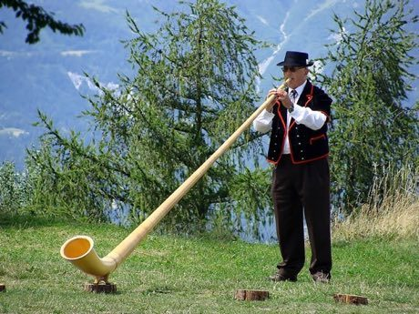

Home / Living Traditions / Northern and Eastern Europe
Playable heritage gameAlphorn Mountain Echo
Also known as Alphorn · Alpenhorn
The alphorn is a very long wooden horn, several metres of spruce, that rests on the ground while the player blows into the mouthpiece. It has no holes at all: the player makes every note by tightening the lips to sound one of the natural harmonics of the tube, and tunes carry across a valley and come back as an echo.


How to play
- Eight lanes stand for the natural harmonics of the horn, numbered by their place in the series, lowest on the left.
- Notes travel toward a line at the bottom; strike the lane just as a note arrives and let long notes ring.
- Follow the climb up the harmonics first, then the hill-path call.
- In Watch and learn, listen to the call and its echo, then try the same phrase yourself.
Rules at a glance
- The eight notes are natural harmonics 8, 9, 10, 11, 12, 13, 14 and 16 of one fundamental tone; the eleventh is deliberately sharp, as on a real alphorn.
- A stroke within a hair of the note is perfect, a near one is good, and a missed one scores nothing.
- An extra stroke while a tune is running costs a few points.
- Each tune plays twice; three stars need roughly nine notes in ten on time.
About the tradition
The alphorn is played in the Alpine valleys of Switzerland, where herders once used it to call across pastures and where players now gather at village and valley festivals. Horns are carved and bored from a single spruce and are often longer than three metres.
Origins
A living tradition passed from person to person; it is not tied to a single dated origin. It belongs to the cultural world of Northern and Eastern Europe.
Credits
- Tradition: alphorn playing in the Swiss Alps; tunes and figures written for this game
- Photo of an alphorn player in Wallis from Wikimedia Commons (Hans Hillewaert, CC BY-SA 3.0)
- Photo: Hans Hillewaert, CC BY-SA 3.0, source on Wikimedia Commons
- Text: CC BY-SA 4.0, World Heritage Games.
Sources

Get the app
Alphorn Mountain Echo is one of 9 instruments and voices in the Wind & Voice of the World app for Android. Submitted to Google Play; in review. Store links appear here the day it goes live. One app, many traditions, no account needed.
More games to play


Alpine Yodel
Switzerland +2 · Archery, throwing and target gamesPlay preview · in the Wind & Voice of the World app

Gusle Bow and Verse
Serbia +2 · Musical instrumentsPlay preview · in the Folk Strings of the World app
More from Switzerland

Clockwork Movement Builder
Germany +2 · Puzzles and mind games

Stone put
Bhutan +1 · Dexterity and skill games
Swiss wrestling
Switzerland · Wrestling and martial sports